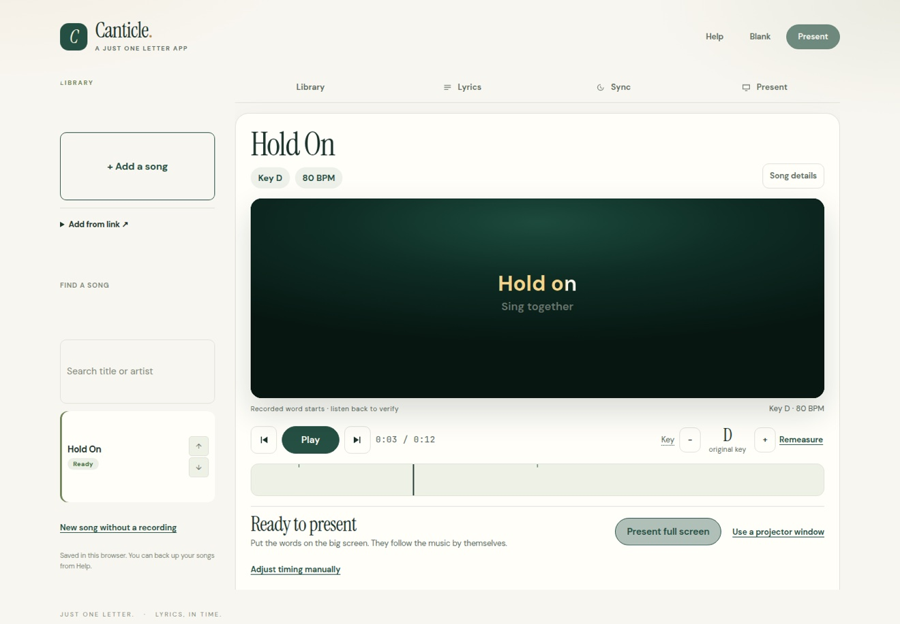
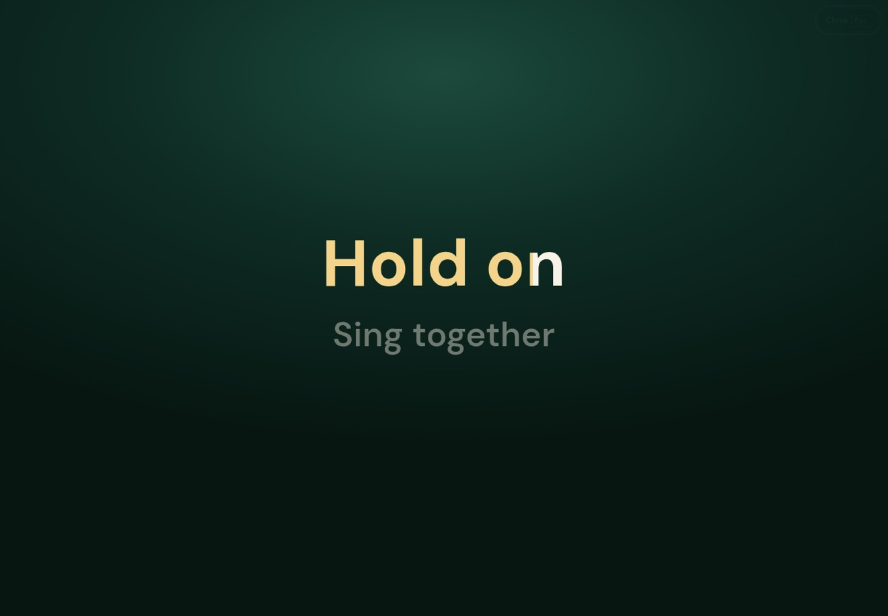
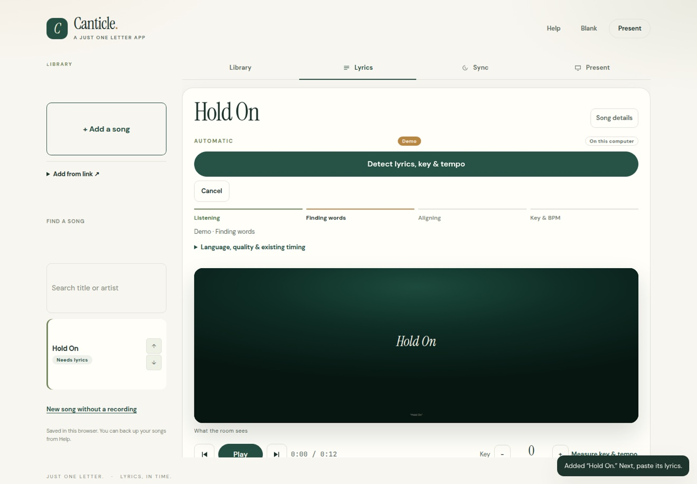
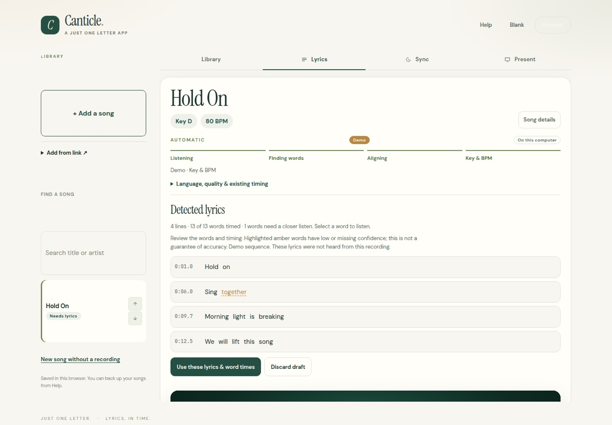

AI for Church Hackathon 2026 · Building Oct 30 to Nov 27
Canticle.
Words that follow
the song.
Lyrics light up word by word, in time with the music.
No slide operator. No clicking through verses.
In build now.
Not yet released.
Why it exists
For the church
with no media team.
Small churches do not always have a reliable
volunteer to run slides on Sunday.
Canticle presents lyrics full screen, or to a projector window, and keeps them in step with the song. It also shows the key and tempo for the people leading worship, so the room can stay together without someone driving the display.
See it
The words, on screen,
in time.
The app on your computer,
and what the room sees.


How it works
From a recording
to ready.
Drop in a song. Canticle does
the timing work.


Watch it
Every word,
right on time.
A first look at Canticle:
drop in a recording, check the
words, then press Present.
Build log
What is being
built now.
Exact word timing. The words land on the vocal, not on an estimate.
One minute song setup. Audio plus lyrics becomes a synced song, ready to present.
Key guide. Kept modest. Key and tempo shown for the worship team.
Nov 1, 2026. Canticle is built and running. What is left is final polish, a few more features, and the hackathon submission pieces: the project write up and the demo video. The hackathon entry is Canticle, in the Church Operations and Admin track. Only work built Oct 30 to Nov 27 counts toward the entry.
ChristopherFounder, Just One Letter
Follow along
Start with hello.
Questions about Canticle, or a church
that could use it one day.